2. الأدوات المستخدمة في الوثيقة
سنستخدم في هذا المستند الأدوات التالية:
- JDK Java 1.5
- خادم الويب TOMCAT (http://tomcat.apache.org/)،
- بيئة التطوير ECLIPSE (http://www.eclipse.org/) مع المكون الإضافي WTP (Web Tools Package).
- متصفح (IE، NETSCAPE، MOZILLA Firefox، OPERA، ...).
هذه أدوات مجانية. بشكل عام، يمكن استخدام العديد من الأدوات المجانية في تطوير الويب:
http://www.borland.com/jbuilder/foundation/index.html | ||
http://struts.apache.org/ | ||
http://www.mysql.com/ | ||
http://tomcat.apache.org/ | ||
http://www.netscape.com/ | ||
2.1. J ava 1.5
يتطلب حاوية سيرفلت Tomcat 5.x جهازًا افتراضيًا Java 1.5. لذلك يجب أولاً تثبيت هذا الإصدار من Java الذي يمكن العثور عليه في موقع Sun على الرابط [http://www.sun.com] -> [http://java.sun.com/j2se/1.5.0/download.jsp] (مايو 2006):

الخطوة 2:

الخطوة 3:
ابدأ تثبيت JDK 1.5 من الملف الذي تم تنزيله.
2.2. حاوية سيرفلتات Tomcat 5
لتشغيل السيرفلت، نحتاج إلى حاوية سيرفلت. نقدم هنا أحدها، وهو Tomcat 5.x، المتوفر على الرابط http://tomcat.apache.org/. نوضح هنا خطوات التثبيت (مايو 2006). إذا كانت هناك نسخة سابقة من Tomcat مثبتة بالفعل، فمن الأفضل إزالتها أولاً.

لتنزيل المنتج، اتبع الرابط [Tomcat 5.x] أعلاه:

يمكنك اختيار ملف .exe المخصص لمنصة Windows. بمجرد تنزيله، قم بتشغيل تثبيت Tomcat:
قم بـ [next] ->

نوافق على شروط الترخيص ->

انقر على [next] ->
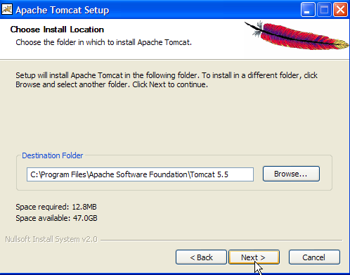
قبول مجلد التثبيت المقترح أو تغييره باستخدام [Browse] ->

تحديد اسم المستخدم/كلمة مرور مسؤول خادم Tomcat. هنا تم تعيين [admin / admin] ->
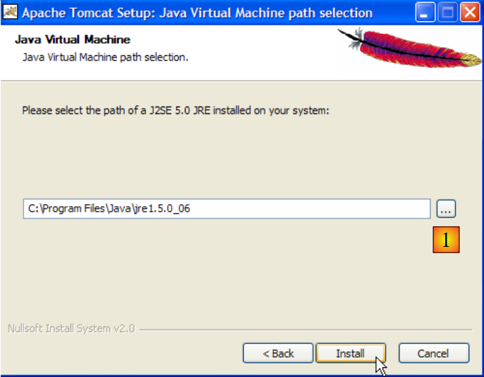
يحتاج Tomcat 5.x إلى JRE 1.5. ومن المفترض أن يعثر على الإصدار المثبت على جهازك. أعلاه، المسار المحدد هو مسار JRE 1.5 الذي تم تنزيله في الفقرة 2.1. إذا لم يتم العثور على JRE، فحدد جذره باستخدام الزر [1]. بعد ذلك، استخدم الزر [Install] لتثبيت Tomcat 5.x ->

يُنهي الزر [Finish] عملية التثبيت. يُشار إلى وجود Tomcat برمز يظهر على يمين شريط مهام Windows:

يؤدي النقر بزر الماوس الأيمن على هذا الرمز إلى الوصول إلى أوامر تشغيل – إيقاف الخادم:

نستخدم الخيار [Stop service] لإيقاف تشغيل خادم الويب الآن:

لاحظ تغيير حالة الرمز. يمكن إزالة هذا الرمز من شريط المهام:

تم تثبيت Tomcat في المجلد الذي اختاره المستخدم، والذي سنطلق عليه من الآن فصاعدًا <tomcat>. هيكل هذا المجلد للإصدار Tomcat 5.5.17 الذي تم تنزيله هو كما يلي:

أدى تثبيت Tomcat إلى ظهور عدد من الاختصارات في القائمة [Démarrer]. نستخدم الرابط [Monitor] أدناه لتشغيل أداة إيقاف/تشغيل Tomcat:
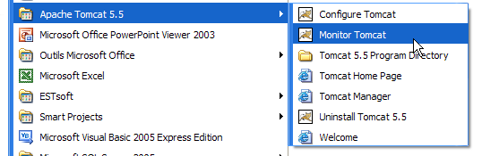
ثم نجد الرمز الموضح سابقًا:
يمكن تنشيط شاشة Tomcat بالنقر المزدوج على هذه الأيقونة:

تسمح لنا الأزرار [Start - Stop - Pause] - Restart بتشغيل - إيقاف - إعادة تشغيل الخادم. نقوم بتشغيل الخادم بواسطة [Start] ثم، باستخدام متصفح، نطلب عنوان URL http://localhost:8080. يجب أن نحصل على صفحة مشابهة للصفحة التالية:

يمكننا اتباع الروابط أدناه للتحقق من التثبيت الصحيح لـ Tomcat:

جميع الروابط الموجودة في الصفحة [http://localhost:8080] مهمة، وننصح القارئ باستكشافها. سنعود لاحقًا إلى الروابط التي تسمح بإدارة تطبيقات الويب المنشورة داخل الخادم:

2.3. نشر تطبيق ويب داخل خادم Tomcat
قراءات [ref1]: الفصل 1، الفصل 2: 2.3.1، 2.3.2، 2.3.3
2.3.1. النشر
يجب أن يتبع تطبيق الويب قواعد معينة ليتم نشره داخل حاوية سيرفلت. لنفترض أن <webapp> هو مجلد تطبيق الويب. يتكون تطبيق الويب من:
في المجلد <webapp>\WEB-INF\classes | |
في المجلد <webapp>\WEB-INF\lib | |
في المجلد <webapp> أو المجلدات الفرعية |
يتم تكوين تطبيق الويب بواسطة ملف XML: <webapp>\WEB-INF\web.xml.
لنقم بإنشاء تطبيق الويب الذي تكون شجرته كما يلي:

سنقوم بإنشاء الشجرة المذكورة أعلاه باستخدام مستكشف Windows. المجلدان [classes] و [lib] فارغان هنا. يحتوي المجلد [vues] على ملف ثابت HTML:

محتواه كما يلي:
<html>
<head>
<title>Application exemple</title>
</head>
<body>
Application exemple active ....
</body>
</html>
إذا تم تحميل هذا الملف في متصفح، فسنحصل على الصفحة التالية:

يُظهر العنوان URL الذي يعرضه المتصفح أن الصفحة لم يتم توفيرها بواسطة خادم ويب، بل تم تحميلها مباشرةً بواسطة المتصفح. نريد الآن أن تكون متاحة عبر خادم الويب Tomcat.
لنعد إلى شجرة المجلدات <tomcat>:
يتم تكوين تطبيقات الويب المنشورة داخل خادم Tomcat باستخدام ملفات XML الموجودة في المجلد [<tomcat>\conf\Catalina\localhost]:
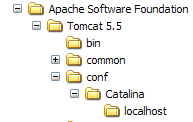 | 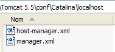 |
يمكن إنشاء ملفات XML هذه يدويًا نظرًا لبساطة هيكلها. بدلاً من اتباع هذا النهج، سنستخدم أدوات الويب التي يوفرها لنا Tomcat.
2.3.2. إدارة Tomcat
على صفحة الدخول http://localhost:8080، يوفر لنا الخادم روابط لإدارته:

يتيح لنا الرابط [Tomcat Administration] إمكانية تكوين الموارد التي يوفرها Tomcat للتطبيقات الويب المنشورة بداخله، على سبيل المثال مجموعة اتصالات بقاعدة بيانات. دعونا نتبع الرابط:

تشير الصفحة التي تم الحصول عليها إلى أن إدارة Tomcat 5.x تتطلب حزمة خاصة تسمى "admin". لنعد إلى موقع Tomcat:

لنقم بتنزيل ملف zip المسمى [Administration Web Application] ثم نقوم بفك ضغطه. محتواه هو التالي:

يجب نسخ المجلد [admin] إلى [<tomcat>\server\webapps] حيث <tomcat> هو المجلد الذي تم تثبيت Tomcat فيه 5.x:
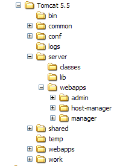
يحتوي المجلد [localhost] على ملف [admin.xml] الذي يجب نسخه إلى [<tomcat>\conf\Catalina\localhost]:

لنوقف Tomcat ثم نعيد تشغيله إذا كان نشطًا. ثم باستخدام متصفح، نطلب صفحة الدخول إلى خادم الويب مرة أخرى:
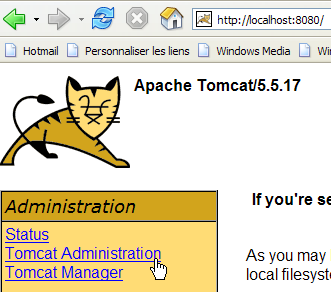
لنتبع الرابط [Tomcat Administration]. نحصل على صفحة تعريف:
ملاحظة: في الواقع، للحصول على الصفحة أدناه، اضطررت أولاً إلى طلب عنوان URL [http://localhost:8080/admin/index.jsp] يدويًا. ولم يعمل الرابط [Tomcat Administration] أعلاه إلا بعد ذلك. لا أعرف ما إذا كان هذا خطأ إجرائي من جانبي أم لا.
 | 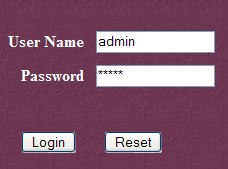 |
هنا، يجب إعادة إدخال المعلومات التي قدمناها أثناء تثبيت Tomcat. في حالتنا، نقدم الزوج admin / admin. ينقلنا الزر [Login] إلى الصفحة التالية:

تسمح هذه الصفحة لمسؤول Tomcat بتحديد
- مصادر البيانات (Data Sources)،
- المعلومات اللازمة لإرسال البريد (Mail Sessions)،
- بيانات البيئة التي يمكن لجميع التطبيقات الوصول إليها (Environment Entries)،
- إدارة مستخدمي/مسؤولي Tomcat (Users)،
- وإدارة مجموعات المستخدمين (Groups)،
- تحديد الأدوار (= ما يمكن للمستخدم فعله أو عدم فعله)،
- تحديد خصائص تطبيقات الويب التي ينشرها الخادم (Service Catalina)
لننتقل إلى الرابط [Roles] أعلاه:

تسمح الدور بتحديد ما يمكن للمستخدم أو مجموعة المستخدمين القيام به أو عدم القيام به. يتم ربط حقوق معينة بدور ما. يرتبط كل مستخدم بدور واحد أو أكثر ويتمتع بحقوق هذه الأدوار. يمنح الدور [manager] أدناه الحق في إدارة تطبيقات الويب التي يتم نشرها في Tomcat (النشر، التشغيل، الإيقاف، إلغاء التحميل). سنقوم بإنشاء مستخدم [manager] ونربطه بالدور [manager] لتمكينه من إدارة تطبيقات Tomcat. للقيام بذلك، نتبع الرابط [Users] في صفحة الإدارة:

نلاحظ أن هناك عددًا من المستخدمين موجودين بالفعل. نستخدم الخيار [Create New User] لإنشاء مستخدم جديد:

نمنح المستخدم manager كلمة المرور manager ونخصص له دور manager. نستخدم الزر [Save] لتأكيد هذه الإضافة. يظهر المستخدم الجديد في قائمة المستخدمين:

سيتم إضافة هذا المستخدم الجديد إلى الملف [<tomcat>\conf\tomcat-users.xml]:

الذي يحتوي على ما يلي:
- السطر 10: المستخدم [manager] الذي تم إنشاؤه
هناك طريقة أخرى لإضافة مستخدمين وهي تعديل هذا الملف مباشرة. ويجب اتباع هذه الطريقة بشكل خاص إذا نسيت كلمة مرور المسؤول admin أو manager.
2.3.3. إدارة تطبيقات الويب المنشورة
لنعد الآن إلى صفحة الدخول [http://localhost:8080] ونتبع الرابط [Tomcat Manager]:

نحصل عندئذٍ على صفحة مصادقة. نقوم بتسجيل الدخول باسم manager / manager، c.a.d. المستخدم ذو الدور [manager] الذي أنشأناه للتو. في الواقع، لا يمكن استخدام هذا الرابط إلا لمستخدم لديه هذا الدور. في السطر 11 من [tomcat-users.xml]، نرى أن المستخدم [admin] لديه أيضًا الدور [manager]. لذلك يمكننا أيضًا استخدام المصادقة [admin / admin].

نحصل على صفحة تسرد التطبيقات المنشورة حاليًا في Tomcat:

يمكننا إضافة تطبيق جديد باستخدام النماذج الموجودة أسفل الصفحة:

هنا، نريد نشر التطبيق النموذجي الذي أنشأناه سابقًا داخل Tomcat. نقوم بذلك بالطريقة التالية:

/example | الاسم المستخدم للإشارة إلى تطبيق الويب المراد نشره | |
C:\data\2005-2006\eclipse\dvp-eclipse-tomcat\مثال | مجلد تطبيق الويب |
للحصول على الملف [C:\data\2005-2006\eclipse\dvp-eclipse-tomcat\exemple\vues\exemple.html]، سنطلب من Tomcat الملف URL و [http://localhost:8080/exemple/vues/exemple.html]. وبالتالي، فإن السياق يستخدم لتسمية جذر شجرة التطبيق الويب الذي تم نشره. نستخدم الزر [Deploy] لتنفيذ نشر التطبيق. إذا سارت الأمور على ما يرام، فسنحصل على صفحة الاستجابة التالية:

ويظهر التطبيق الجديد في قائمة التطبيقات المنشورة:

دعونا نعلق على سطر السياق /example أعلاه:
رابط على http://localhost:8080/exemple | |
يسمح بتشغيل التطبيق | |
يسمح بإيقاف التطبيق | |
يسمح بإعادة تحميل التطبيق. وهذا ضروري على سبيل المثال عند إضافة أو تعديل أو حذف فئات معينة من التطبيق. | |
حذف السياق [/exemple]. يختفي التطبيق من قائمة التطبيقات المتاحة. |
الآن بعد أن تم نشر تطبيقنا /example، يمكننا إجراء بعض الاختبارات. نطلب الصفحة [exemple.html] عبر عنوان URL [http://localhost:8080/exemple/vues/exemple.html]:

هناك طريقة أخرى لنشر تطبيق ويب داخل خادم Tomcat وهي إدخال المعلومات التي أدخلناها عبر واجهة الويب في ملف [contexte].xml الموجود في المجلد [<tomcat>\conf\Catalina\localhost]، حيث [contexte] هو اسم تطبيق الويب.
لنعد إلى واجهة إدارة Tomcat:

لنحذف التطبيق [/exemple] مع رابطه [Undeploy]:

لم يعد التطبيق [/exemple] جزءًا من قائمة التطبيقات النشطة. الآن لنحدد الملف [exemple.xml] التالي:
يتكون الملف XML من علامة <Context> واحدة، حيث يحدد السمة docBase المجلد الذي يحتوي على تطبيق الويب المراد نشره. لنضع هذا الملف في <tomcat>\conf\Catalina\localhost:

لنوقف Tomcat ونعيد تشغيله إذا لزم الأمر، ثم نعرض قائمة التطبيقات النشطة باستخدام أداة إدارة Tomcat:

التطبيق [/exemple] موجود بالفعل. لنطلب، باستخدام متصفح، عنوان URL:
[http://localhost:8080/exemple/vues/exemple.html]:
يمكن حذف تطبيق الويب الذي تم نشره بهذه الطريقة من قائمة التطبيقات المنشورة، بنفس الطريقة السابقة، باستخدام الرابط [Undeploy]:

في هذه الحالة، يتم حذف الملف [exemple.xml] تلقائيًا من المجلد [<tomcat>\conf\Catalina\localhost].
أخيرًا، لنشر تطبيق ويب داخل Tomcat، يمكن أيضًا تعريف سياقه في الملف [<tomcat>\conf\server.xml]. لن نتطرق إلى هذه النقطة هنا.
2.3.4. تطبيق ويب مع صفحة رئيسية
عندما نطلب عنوان URL [http://localhost:8080/exemple/]، نحصل على الرد التالي:

يعتمد هذا النتيجة على تكوين Tomcat. مع الإصدارات السابقة، كنا سنحصل على محتوى المجلد الفعلي للتطبيق [/exemple]. ومن الجيد أن Tomcat يمنع هذا العرض بشكل افتراضي الآن.
يمكننا التأكد من أنه عند طلب السياق، يتم عرض صفحة تسمى الصفحة الرئيسية. للقيام بذلك، نقوم بإنشاء ملف [web.xml] ونضعه في المجلد <مثال>\WEB-INF، حيث <مثال> هو المجلد الفعلي لتطبيق الويب [/exemple]. هذا الملف هو التالي:
- الأسطر 2-5: العلامة الجذرية <web-app> مع سمات تم الحصول عليها عن طريق النسخ واللصق من الملف [web.xml] الخاص بتطبيق [/admin] في Tomcat (<tomcat>/server/webapps/admin/WEB-INF/web.xml).
- السطر 7: اسم العرض لتطبيق الويب. وهو اسم حر له قيود أقل من اسم سياق التطبيق. يمكن إدراج مسافات فيه على سبيل المثال، وهو ما لا يمكن مع اسم السياق. يتم عرض هذا الاسم على سبيل المثال بواسطة مسؤول Tomcat:
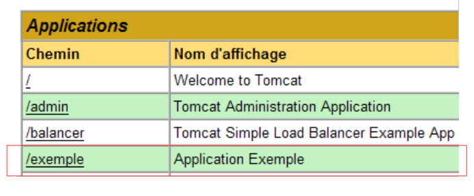
- السطر 8: وصف تطبيق الويب. يمكن بعد ذلك الحصول على هذا النص عن طريق البرمجة.
- الأسطر 9-11: قائمة ملفات الترحيب. تُستخدم العلامة <welcome-file-list> لتحديد قائمة العروض التي سيتم عرضها عندما يطلب العميل سياق التطبيق. قد يكون هناك عدة عروض. يتم عرض أول عرض يتم العثور عليه للعميل. هنا لدينا عرض واحد فقط: [/vues/exemple.html]. وبالتالي، عندما يطلب العميل عنوان URL [/exemple]، سيتم في الواقع تسليمه عنوان URL [/exemple/vues/exemple.html].
لنحفظ هذا الملف [web.xml] في <مثال>\WEB-INF:
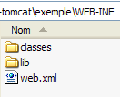
إذا كان Tomcat لا يزال نشطًا، فمن الممكن إجباره على إعادة تحميل تطبيق الويب [/exemple] باستخدام الرابط [Recharger]:

أثناء عملية "إعادة التحميل" هذه، يعيد Tomcat قراءة الملف [web.xml] الموجود في [<exemple>\WEB-INF] إذا كان موجودًا. وسيكون هذا هو الحال هنا. إذا تم إيقاف Tomcat، فقم بإعادة تشغيله.
باستخدام متصفح، نطلب URL [http://localhost:8080/exemple/]:

لقد نجحت آلية ملفات الاستقبال.
2.4. تثبيت Eclipse
Eclipse هي بيئة تطوير متعددة اللغات. وهي مستخدمة بكثرة في تطوير Java. وهي أداة قابلة للتوسيع عن طريق إضافة أدوات تسمى المكونات الإضافية. يوجد عدد كبير من المكونات الإضافية وهذا ما يجعل Eclipse قوية.
Eclipse متاح على الرابط [http://www.eclipse.org/downloads/]:

نرغب في استخدام Eclipse لتطوير الويب بلغة Java. يوجد عدد من المكونات الإضافية لهذا الغرض. تساعد هذه المكونات في التحقق من صحة بناء جملة الصفحات JSP، والملفات XML، ... وتسمح باختبار تطبيق ويب داخل Eclipse. سنستخدم أحد هذه المكونات الإضافية، المسمى Web Tools Package (WTP). عادةً ما تكون خطوات تثبيت Eclipse كما يلي:
- تثبيت Eclipse
- تثبيت المكونات الإضافية المطلوبة
يتطلب المكون الإضافي WTP مكونات إضافية أخرى، مما يجعل تثبيته معقدًا إلى حد ما. لذلك، يقدم موقع Eclipse حزمة تتضمن منصة التطوير Eclipse والمكوّن الإضافي WTP مع جميع المكوّنات الإضافية الأخرى التي يحتاجها هذا المكوّن. هذه الحزمة متوفرة على موقع Eclipse (مايو 2006) على الرابط [http://download.eclipse.org/webtools/downloads/]:

لننتقل إلى الرابط [1.0.2] أعلاه:
نقوم بتنزيل الحزمة [wtp] من خلال الرابط أعلاه. يحتوي الملف المضغوط الناتج على المحتوى التالي:


ما عليك سوى فك ضغط هذا المحتوى في مجلد. سنسمي هذا المجلد من الآن فصاعدًا <eclipse>. ومحتواه كما يلي:

[eclipse.exe] هو الملف القابل للتنفيذ و [eclipse.ini] هو ملف التكوين الخاص به. لنلقِ نظرة على محتواه:
يتم استخدام هذه المعلمات عند تشغيل Eclipse بالطريقة التالية:
يمكننا الحصول على نفس النتيجة التي نحصل عليها باستخدام ملف .ini عن طريق إنشاء اختصار يقوم بتشغيل Eclipse باستخدام نفس هذه المعلمات. دعونا نوضحها:
- -vmargs: يشير إلى أن المعلمات التالية مخصصة للآلة الافتراضية Java التي ستقوم بتشغيل Eclipse. في الواقع، Eclipse هو تطبيق Java.
- -Xms40m: ؟
- -Xmx256m: يحدد حجم الذاكرة بالميغابايت المخصصة للآلة الافتراضية Java (JVM) التي تقوم بتشغيل Eclipse. بشكل افتراضي، يبلغ هذا الحجم 256 ميغابايت كما هو موضح هنا. إذا سمحت الآلة بذلك، يُفضل استخدام 512 ميغابايت.
يتم تمرير هذه الوسيطات إلى JVM التي ستقوم بتشغيل Eclipse. يتم تمثيل JVM بملف [java.exe] أو [javaw.exe]. كيف يتم العثور عليه؟ في الواقع، يتم البحث عنه بطرق مختلفة:
- في ملف PATH التابع لملف OS
- في المجلد <JAVA_HOME>/jre/bin حيث JAVA_HOME هي متغير نظام يحدد المجلد الجذر لـ JDK.
- إلى موقع يتم تمريره كحجة إلى Eclipse بالشكل -vm <المسار>\javaw.exe
يُفضل الحل الأخير لأن الحلين الآخرين عرضة لمخاطر التثبيتات اللاحقة للتطبيقات التي قد تغير إما PATH من OS، أو تغير المتغير JAVA_HOME.
لذلك نقوم بإنشاء الاختصار التالي:
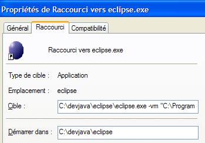
<eclipse>\eclipse.exe -vm "C:\Program Files\Java\jre1.5.0_06\bin\javaw.exe" -vmargs -Xms40m -Xmx512m | |
مجلد <eclipse> الخاص بتثبيت Eclipse |
بعد ذلك، قم بتشغيل Eclipse عبر هذا الاختصار. ستظهر لك نافذة حوار أولى:

[workspace] هو مساحة عمل. لنقبل القيم الافتراضية المقترحة. بشكل افتراضي، سيتم إنشاء مشاريع Eclipse في مجلد <workspace> المحدد في مربع الحوار هذا. هناك طريقة لتجاوز هذا السلوك. وهذا ما سنفعله بشكل منهجي. لذا فإن الإجابة المقدمة في مربع الحوار هذا ليست مهمة.
بعد هذه الخطوة، يتم عرض بيئة التطوير Eclipse:
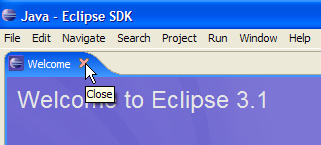
نغلق العرض [Welcome] كما هو مقترح أعلاه:

قبل إنشاء مشروع Java، سنقوم بتكوين Eclipse لتحديد JDK لاستخدامه في ترجمة مشاريع Java. للقيام بذلك، نختار الخيار [Window / Preferences / Java / Installed JREs ]:

عادةً، يجب أن يكون JRE (Java Runtime Environment) الذي تم استخدامه لتشغيل Eclipse نفسه موجودًا في قائمة JRE. سيكون هذا هو الخيار الوحيد عادةً. يمكن إضافة JRE باستخدام الزر [Add]. يجب عندئذٍ تحديد جذر JRE. أما الزر [Search]، فسيبدأ البحث عن ملف JREs على القرص. هذه طريقة جيدة لمعرفة أين وصلنا في ملفات JREs التي نقوم بتثبيتها ثم ننسى إزالتها عند الانتقال إلى إصدار أحدث. أعلاه، ملف JRE المحدد هو الذي سيتم استخدامه لتجميع مشاريع Java وتشغيلها.
ملف JRE الذي سيتم استخدامه في أمثلةنا هو الملف الذي تم تثبيته في الفقرة 2.1 والذي استُخدم أيضًا لتشغيل Eclipse. النقر المزدوج عليه يتيح الوصول إلى خصائصه:

الآن، لنقم بإنشاء مشروع Java [File / New / Project]:
 | 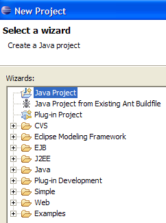 |
اختر [Java Project]، ثم [Next] ->

في [2]، نحدد مجلدًا فارغًا سيتم تثبيت مشروع Java فيه. في [1]، نسمي المشروع. لا يجب أن يحمل اسم المجلد كما قد يوحي المثال أعلاه. بعد ذلك، نستخدم الزر [Finish] لإنهاء مساعد الإنشاء. وهذا يعني قبول القيم الافتراضية المقترحة في الصفحات التالية من المساعد.
وبذلك نحصل على هيكل مشروع Java:

نضغط بزر الفأرة الأيمن على المشروع [test1] لإنشاء فئة Java:


- في [1]، المجلد الذي سيتم إنشاء الفئة فيه. يقترح Eclipse بشكل افتراضي مجلد المشروع الحالي.
- في [2]، الحزمة التي سيتم وضع الفئة فيها
- في [3]، اسم الفئة
- في [4]، نطلب إنشاء الطريقة الثابتة [main]
نقوم بالتحقق من صحة المساعد بواسطة [Finish]. يتم عندئذٍ إثراء المشروع بفئة:

قام Eclipse بإنشاء الهيكل الأساسي للفئة. يمكن الحصول عليه بالنقر المزدوج على [Test1.java] أعلاه:

نقوم بتعديل الكود أعلاه على النحو التالي:

نقوم بتشغيل البرنامج [Test1.java]: [clic droit sur Test1.java -> Run As -> Java Application]

يتم الحصول على نتيجة التنفيذ في النافذة [Console]:
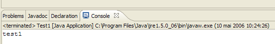
2.5. تكامل Tomcat - Eclipse
من أجل العمل مع Tomcat مع البقاء داخل Eclipse، يتعين علينا تعريف هذا الخادم في إعدادات Eclipse. وللقيام بذلك، نختار الخيار [File / New / Other]. ثم يظهر لنا المساعد التالي:

نختار إنشاء خادم جديد. نختار الرمز [Server] أعلاه ثم نقوم بـ [Next]:
يتم إضافة الخادم من خلال إضافة مجلد في مستكشف مشاريع Eclipse:
لإدارة Tomcat من Eclipse، نعرض العرض المسمى [Servers] باستخدام الخيار [Window -> Show View -> Other -> Server]:


قم بـ [OK]. ستظهر عندئذٍ طريقة العرض [Servers]:

تظهر في هذه الشاشة جميع الخوادم المسجلة، وهنا خادم Tomcat 5.5 الذي سجلناه للتو. النقر بزر الماوس الأيمن عليه يتيح الوصول إلى الأوامر التي تسمح بتشغيل – إيقاف – إعادة تشغيل الخادم:

في الأعلى، نقوم بتشغيل الخادم. عند بدء تشغيله، يتم كتابة عدد من السجلات في العرض [Console]:
يتطلب فهم هذه السجلات بعض الخبرة. لن نتطرق إلى هذا الأمر بالتفصيل في الوقت الحالي. ومع ذلك، من المهم التحقق من أنها لا تشير إلى أخطاء في تحميل السياقات. في الواقع، عند تشغيله، سيحاول خادم Tomcat / Eclipse تحميل سياق التطبيقات التي يديرها. يتضمن تحميل سياق تطبيق ما استخدام ملفه [web.xml] وتحميل فئة أو أكثر لتهيئته. قد تحدث عدة أنواع من الأخطاء عندئذٍ:
- ملف [web.xml] غير صحيح من الناحية النحوية. هذا هو الخطأ الأكثر شيوعًا. يُنصح باستخدام أداة قادرة على التحقق من صحة مستند XML أثناء إنشائه.
- لم يتم العثور على بعض الفئات المطلوب تحميلها. يتم البحث عنها في [WEB-INF/classes] و [WEB-INF/lib]. يجب عمومًا التحقق من وجود الفئات الضرورية وتدقيق تهجئة تلك المعلنة في ملف [web.xml].
الخادم الذي تم تشغيله من Eclipse لا يمتلك نفس التكوين الذي تم تثبيته في الفقرة 2.2، الصفحة 5. للتأكد من ذلك، نطلب عنوان URL [http://localhost:8080] باستخدام متصفح:

لا تشير هذه الاستجابة إلى أن الخادم لا يعمل، بل إلى أن المورد / المطلوب منه غير متاح. مع خادم Tomcat المدمج في Eclipse، ستكون هذه الموارد عبارة عن مشاريع ويب. سنرى ذلك لاحقًا. في الوقت الحالي، دعونا نوقف Tomcat:

يمكن تغيير وضع التشغيل السابق. لنعد إلى العرض [Servers] ونضغط مرتين على خادم Tomcat للوصول إلى خصائصه:
 | 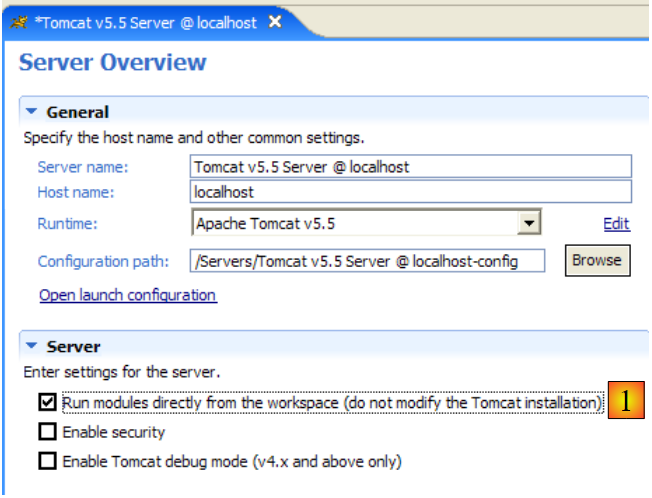 |
مربع الاختيار [1] هو المسؤول عن طريقة التشغيل السابقة. عند تحديده، لا يتم الإعلان عن تطبيقات الويب المطورة في Eclipse في ملفات تكوين خادم Tomcat المرتبط، بل في ملفات تكوين منفصلة. وبذلك، لا تتوفر التطبيقات المحددة افتراضيًا داخل خادم Tomcat: [admin] و [manager] وهما تطبيقان مفيدان. لذلك، سنقوم بإلغاء تحديد [1] وإعادة تشغيل Tomcat:
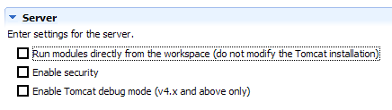 |  |
بعد ذلك، نطلب عنوان URL [http://localhost:8080] باستخدام متصفح:

نجد أن العملية تعمل كما هو موضح في الفقرة 2.3.3، الصفحة 15.
في الأمثلة السابقة، استخدمنا متصفحًا خارجيًّا لـ Eclipse. يمكن أيضًا استخدام متصفح داخلي لـ Eclipse:

نختار أعلاه المتصفح الداخلي. لتشغيله من Eclipse، يمكن استخدام الرمز التالي:

المتصفح الذي سيتم تشغيله فعليًا هو المتصفح المحدد بواسطة الخيار [Window -> Web Browser]. هنا، نحصل على المتصفح الداخلي:

لنقم عند الحاجة بتشغيل Tomcat من Eclipse ونطلب في [1] عنوان URL [http://localhost:8080]:

لنتبع الرابط [Tomcat Manager]:

يُطلب الزوج [login / mot de passe] اللازم للوصول إلى التطبيق [manager]. وفقًا لإعدادات Tomcat التي قمنا بها سابقًا، يمكننا كتابة [admin / admin] أو [manager / manager]. وبذلك نحصل على قائمة بالتطبيقات التي تم نشرها:

نرى التطبيق [personne] الذي أنشأناه. سيكون الرابط المرتبط [Recharger] مفيدًا لنا لاحقًا.